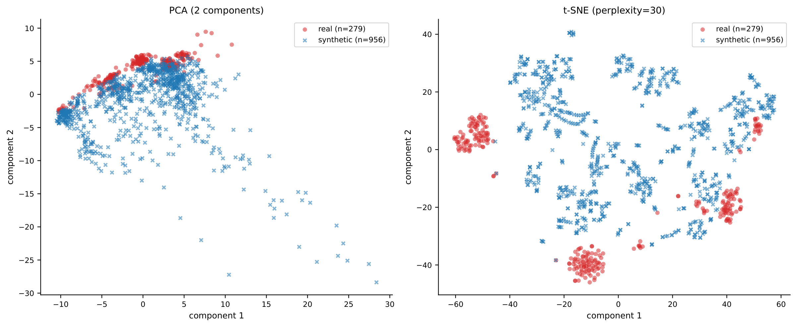
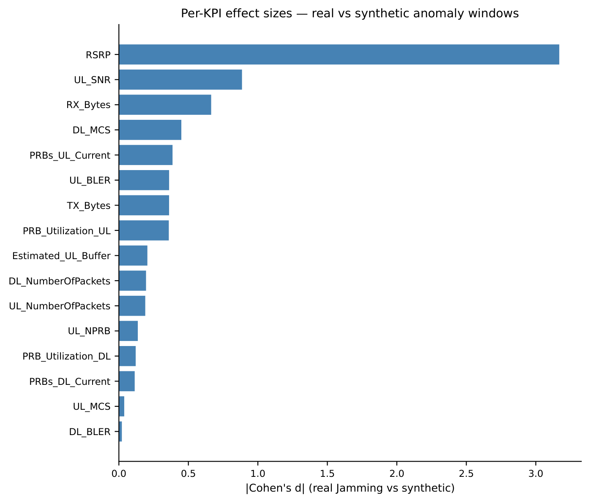
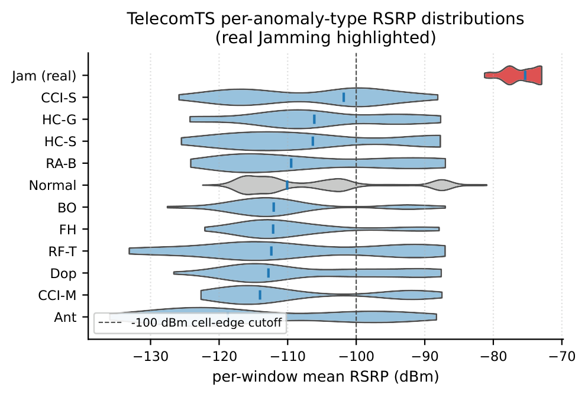
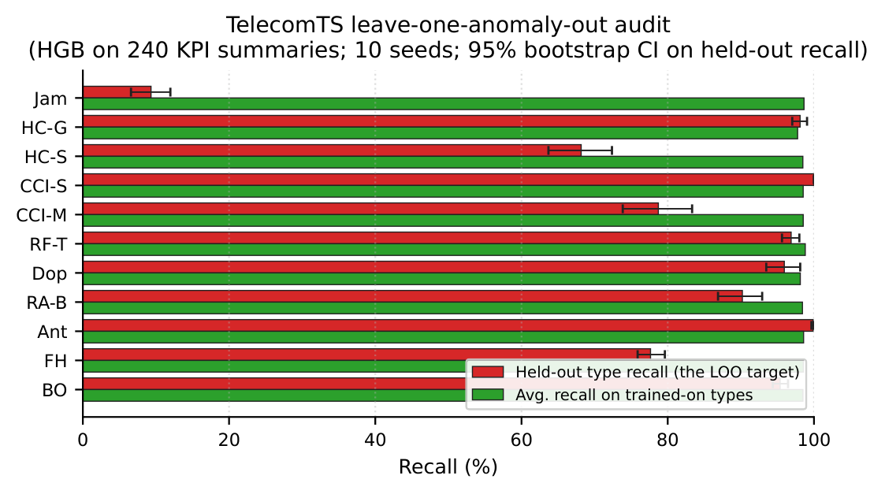
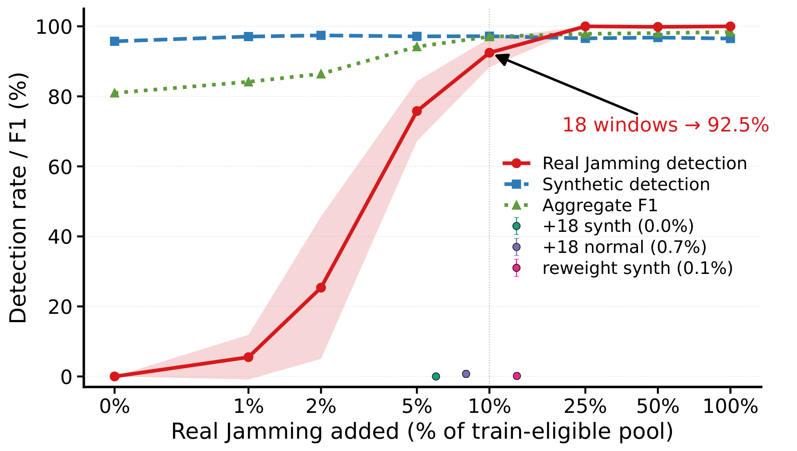
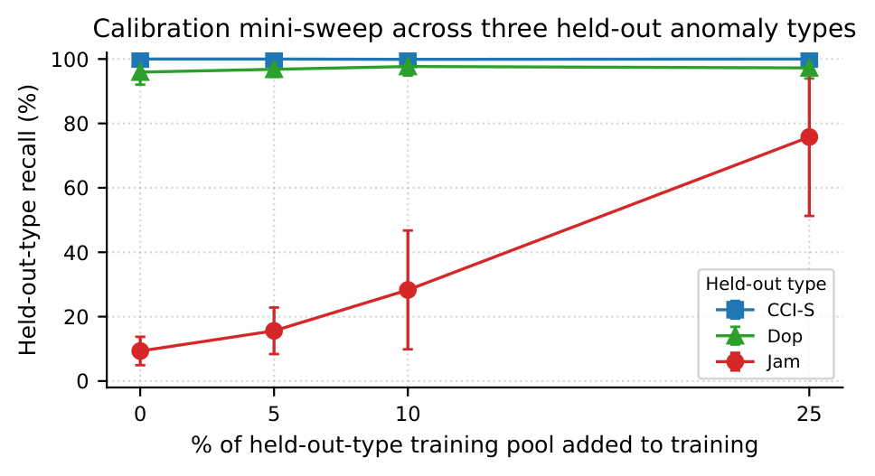
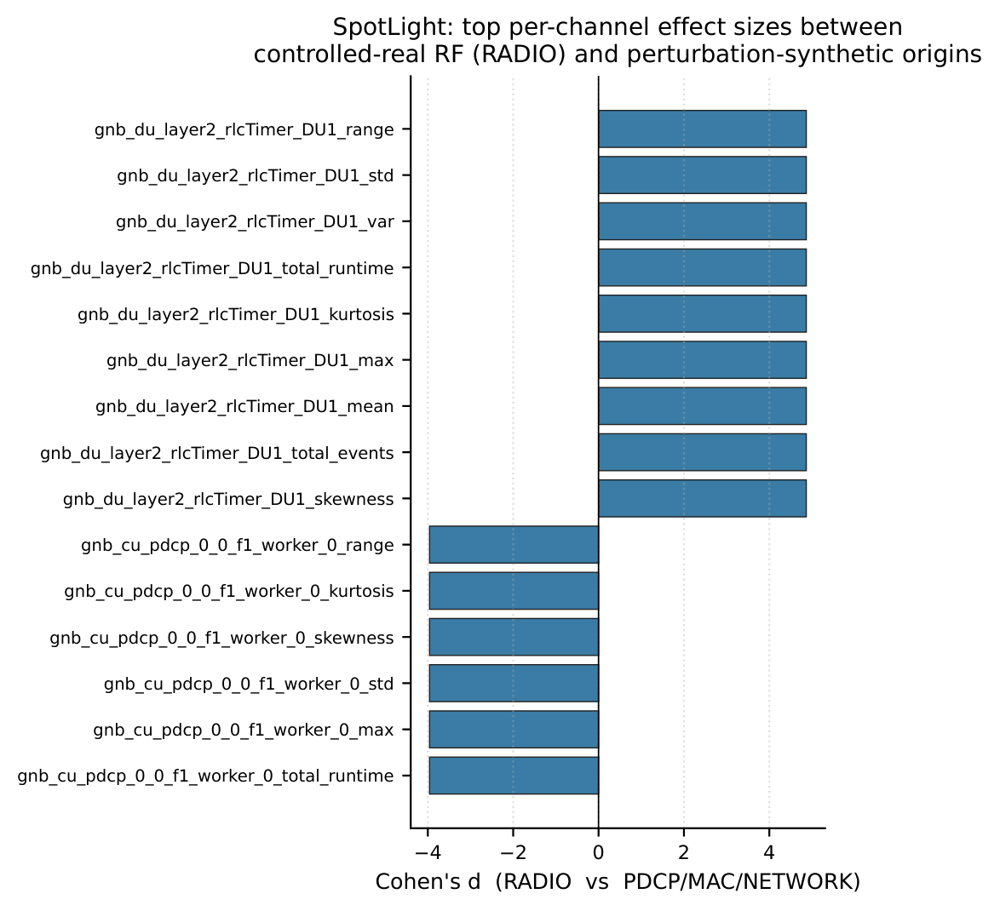
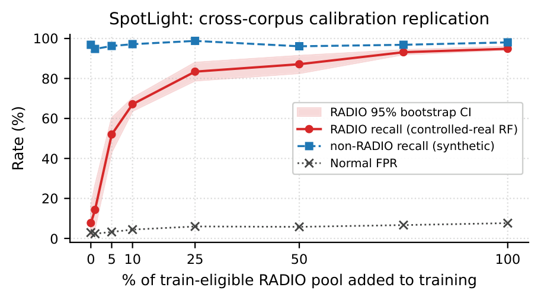

A deployment-oriented audit that asks whether benchmark anomalies actually cover the operating regimes of controlled-real 5G/Open RAN faults — and a calibration recipe and toolkit that repair the gap when they don't.
Many telecom anomaly detectors are trained and evaluated on injected, generated, or simulated anomalies, raising a deployment question: can strong synthetic-benchmark performance be trusted for operational detector selection?
We operationalize origin-aware benchmark auditing: a deployment-oriented evaluation workflow that conditions evaluation on anomaly origin. Across two public 5G/Open RAN testbed corpora (TelecomTS and SpotLight), the audit exposes an operational failure hidden by aggregate metrics — synthetic-only training can keep strong synthetic-anomaly performance while missing controlled-real fault regimes at deployment-relevant operating conditions. We show this reflects an operating-regime coverage gap rather than a model-specific limitation or feature leakage, and that modest controlled-real calibration substantially improves controlled-real detection where extra synthetic data, extra normal data, and synthetic reweighting do not. We release a reproducible toolkit, an operator checklist, and a pre-production shadow-mode CI gate integrated inside Nokia's anomaly-detection pipeline.
Strong synthetic-benchmark performance does not imply a detector will catch real faults. At the natural 3.9% anomaly rate, synthetic-only training reaches aggregate F1 0.81 / AUROC 0.88 — while detecting 0% of controlled-real Jamming. The failure is an operating-regime coverage gap, not a model defect: it holds across 11 detector families (including frozen foundation models), survives RSRP / level / context-matched ablations, and replicates on a second, independent Open RAN corpus. Standard covariate-shift correction cannot repair it — yet 18 controlled-real windows lift recall from ~0 to 0.93.
Synthetic-only training at the natural 3.9% rate (full-scale TelecomTS, mean over 10 seeds). Synthetic-anomaly recall stays high; controlled-real recall collapses to ≈0% — even for frozen foundation-model encoders and deep time-series models.
| Detector | F1 | AUROC | Synthetic recall | Controlled-real recall |
|---|---|---|---|---|
| HGB (tabular) | 0.81 | 0.88 | 96% | 0% |
| XGBoost (tabular) | 0.82 | 0.83 | 97% | 0% |
| Toto — frozen foundation model | 0.59 | 0.88 | 68% | 0% |
| PatchTST (deep, end-to-end) | 0.64 | 0.81 | 73% | 0% |
| TimesNet (deep, end-to-end) | 0.36 | 0.76 | 39% | 0% |
Representative rows from Table 2 (11 detectors total: 6 tabular + 5 deep/foundation).
Controlled-real recall on TelecomTS at a fixed 18-window (f = 10%) budget. Density-ratio reweighting — the standard covariate-shift remedy — does not recover recall, because it can only reweight support the synthetic pool already has.
| Method | Controlled-real recall |
|---|---|
| Synthetic-only baseline | 0.00 |
| Importance weighting — LR density ratio (Sugiyama 2007) | 0.00 |
| uLSIF covariate-shift correction (Kanamori 2009) | 0.01 |
| + 18 controlled-real windows (f = 10%, ours) | 0.93 |
Table 4. On SpotLight the same recipe holds: 52 controlled-real Radio windows recover Radio recall to 0.83 (Table 6).
Organized along the audit narrative — distributional gap → transfer failure → calibration repair — for both public 5G/Open RAN testbeds. Tags mark each figure's role. Click any figure for the full-resolution PDF.






An independent testbed where the dominant separating signal is the layer-2 RLC-timer family rather than RSRP — yet the same gap and the same repair hold.


TelecomAudit is an applied, deployment-oriented benchmark-auditing gate, not a new detector. It runs three ways from one core, all validated in the Nokia pre-production integration (§5.2). Full guide: deployment/README.md.
pass)telecomts-audit --csv data/benchmark.csv --synthetic-only-from-flag \
--output evidence/audit_verdict.json # non-zero exit blocks promotiondocker compose up --build
curl localhost:8765/audit/health
curl -F "file=@data/benchmark.csv" localhost:8765/audit/originOn a 3,958-window / 203-feature internal timing-flow benchmark, origin-aware auditing changes the deployment decision:
| Reporting lens | Numbers | Decision |
|---|---|---|
| Aggregate (status quo) | AUROC ≈ 0.99, F1 ≈ 0.77 (natural); F1 ≈ 0.92 (balanced) | accept |
| Origin-aware (ours) | all anomalies synthetic → origin_incomplete_synthetic_only | hold in shadow |
no_anomalies_present.Every number is reproducible from an operator per-flow CSV — see evidence/industrial/.
Every table and figure maps to one experiment, runnable through main.py.
| Artifact | Experiment | Run |
|---|---|---|
| Table 1 — audit partitions | E1 | python main.py -e E1 |
| Table 2 — detector robustness | E9 + E14 gpu | python main.py -e E9 -e E14 --with-gpu |
| Table 3 — feature ablation | E16 | python main.py -e E16 |
| Table 4 — covariate-shift baselines | E18 | python main.py -e E18 |
| Table 5 — calibration sweep CI | E4 | python main.py -e E4 |
| Table 6 — SpotLight calibration | S2 data | python main.py -e S2 |
| Table 7 — SpotLight detectors | S3 gpu/data | python main.py -e S3 --with-gpu |
| Table 8 — applied evidence | evidence/industrial | — |
| Figure 1 — per-type RSRP | E17 | python main.py -e E17 |
| Figure 2 — calibration sweep | E4 | python main.py -e E4 |
| Figure 3 — leave-one-out | E9b | python main.py -e E9b |
git clone https://github.com/ChimanSalavati/telecomts-real-synthetic-gap.git
cd telecomts-real-synthetic-gap
python -m venv .venv && source .venv/bin/activate
pip install -e ".[api,dev]"
python main.py --list # see all experiments + benchmarks
python main.py --all --preset smoke # offline synthetic, no downloads/GPU
python main.py --benchmark telecomts --preset paper # full reproductionA single configurable runner with paper / quick / smoke presets
and full CLI override writes all outputs to a centralized artifacts/ tree. The public CPU set
reproduces in ~30 minutes without a GPU. Logs:
REPRODUCTION_LOG.md.
@inproceedings{salavati2026telecomaudit,
title = {TelecomAudit: Origin-Aware Benchmark Auditing and Calibration for 5G Anomaly Detection},
author = {Salavati, Chiman and Wu, Liang and Wan, Kelly and Darbari, Mayank and Hong, Liangjie},
booktitle = {Proceedings of the 35th ACM International Conference on Information and Knowledge Management (CIKM '26)},
year = {2026}
}